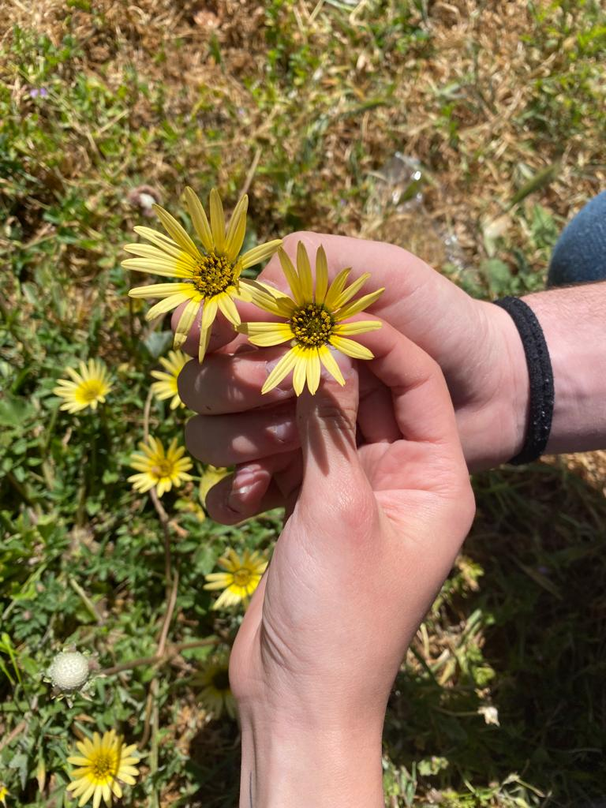

A partir de hoy y hasta el día 22/08/2023, cada día se actualizará la página web y se revelará una nueva pista que te llevará un paso más cerca de la sorpresa final. Todo lo que necesitas hacer es introducir la fecha correspondiente de nuestro aniversario y estar atenta a lo que aparezca en la pantalla. Puede que te encuentres con una canción con una pista oculta en su letra, o una serie de números que necesitas descifrar. Cada día habrá algo nuevo que anotar en tu diario de pistas, así que asegúrate de tenerlo a mano. Si necesitas ayuda, siempre habrá botones de pistas y ayudas disponibles para ti, así como un botón extra para comprobar si el número o respuesta que tienes es correcta. ¡Prepárate para poner a prueba tus habilidades y descubrir la sorpresa final!
¿Estás lista?
